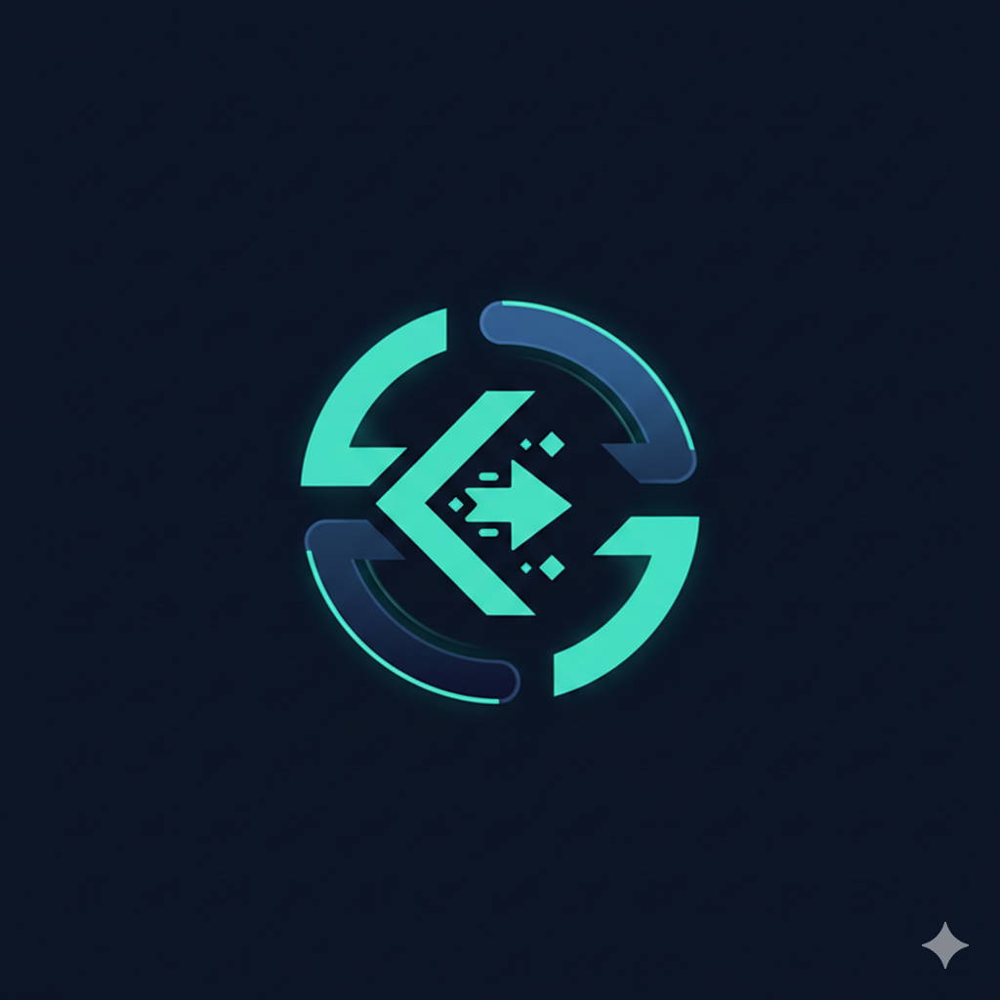

Stripe-style payment infrastructure for Web3 merchants.
Getting paid in crypto is still broken. There is no standard way for a merchant to create a payment request, watch for on-chain confirmation, and fire a webhook to their backend. That workflow is what Stripe solved for fiat a decade ago. Every team that wants to accept cryptocurrency today is building their own fragile version from scratch.
KasGate is the full payment infrastructure stack, ready to deploy. One API call creates a unique non-custodial payment address per order. A signed webhook fires the moment a transaction confirms on-chain. A dashboard handles sessions, analytics, and delivery logs. A drop-in widget embeds the entire payment UI in three lines of HTML.
The first production version runs on Kaspa, chosen for its near-instant DAG confirmations and zero transaction fees. The session engine, webhook system, merchant dashboard, and REST API are chain-agnostic. Porting to another chain means replacing three service files. Nothing else changes.
One POST request creates a payment session with a unique non-custodial address per order, derived using BIP-32/44 HD wallet standards. Merchants never hold private keys. Each session moves through a strict status lifecycle: pending, confirming, then confirmed.
HMAC-SHA256 signed notifications fire on payment detection and on confirmation. Failed deliveries retry automatically with exponential backoff. Every attempt is logged so merchants can see exactly what fired, when it fired, and how their server responded.
A fully hosted payment UI that embeds in three lines of HTML. Shows the payment address, QR code, and a live confirmation countdown. No backend integration needed to get started. Drop it into any webpage and it works out of the box.
A full Next.js dashboard with real-time WebSocket updates. Covers session management, revenue analytics, API key rotation, and webhook delivery logs. Built to the standard a merchant expects from a payment product, not a developer tool.
The full KasGate codebase is public on GitHub. Developers can inspect the session architecture, contribute chain adapters, and build integrations on top of the public API. All design decisions are visible and documented.
A complete walkthrough of the payment flow, from merchant registration through to webhook delivery, is available on YouTube. The live instance on Railway accepts real testnet payments with no local setup.
The API is live and open to query. Developers can create sessions, poll payment status, and test webhook delivery against a running production instance without cloning the repo or configuring anything locally.
The blockchain layer sits in three service files: address derivation, transaction monitoring, and confirmation tracking. Everything else is chain-agnostic. Porting to EVM, Solana, or any UTXO chain is scoped to those three files.